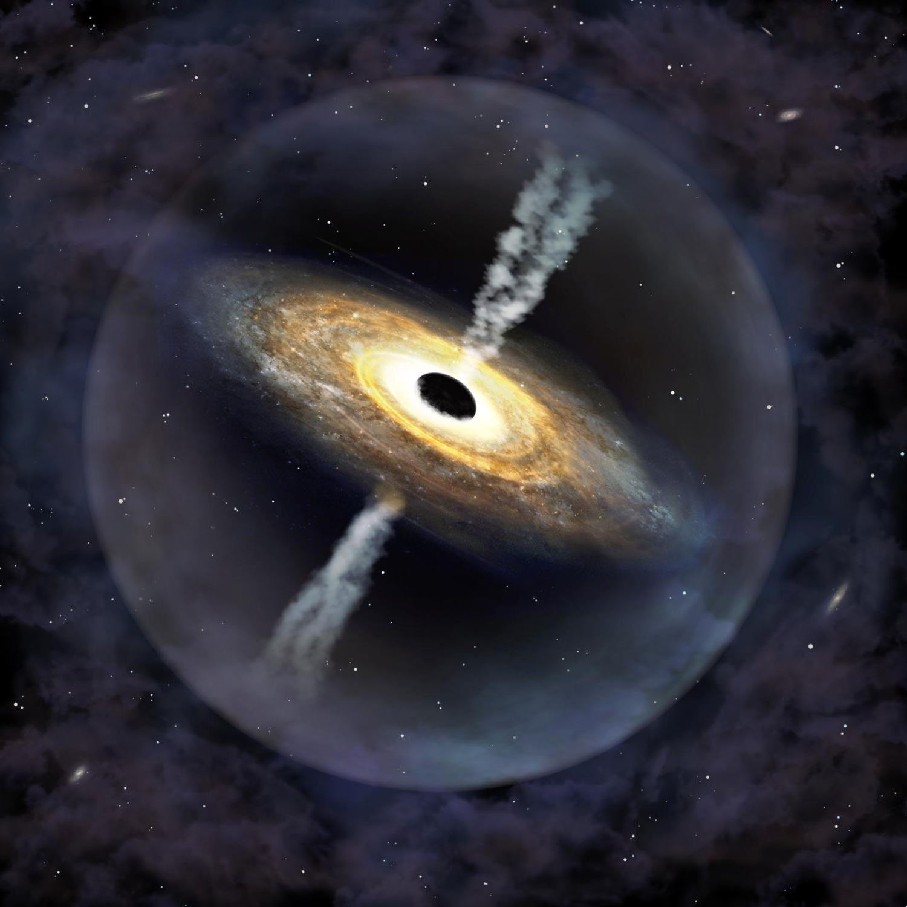

N E W S P A G E

- Black hole
First image capture of a black hole, taken in 2019. Last week, the 2020 Physics Nobel Prize was awarded to three researchers - half of it to Roger Penrose, and the other half jointly awarded to Reinhard Genzel and Andrea Ghez (the fourth woman to earn the physics Nobel Prize!). Everyone in the astro community was thrilled that it has now been 2 years in a row that the physics Nobel Prize goes to space-related areas, first exoplanet research in 2019, and now in 2020 to black hole research.